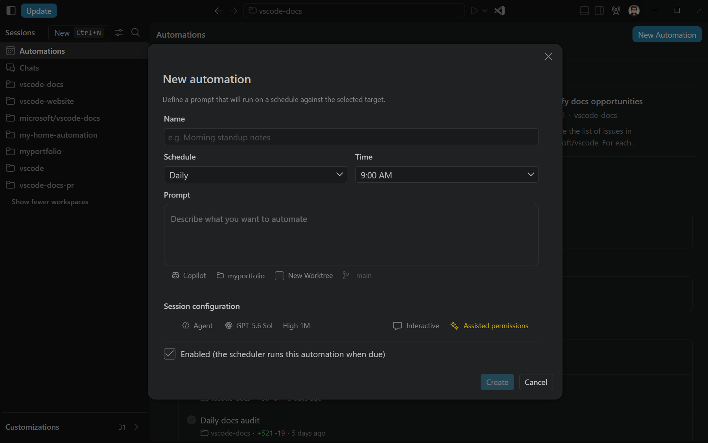

Automations
Put recurring work on a schedule
Save a prompt once and let an agent run it for you: summarize repository changes or triage issues without starting each session by hand.
- In the app: runs on your machine with your tools, hourly, daily, weekly, or by cron
- On GitHub: runs in the cloud, even when your computer is off Preview
- Cloud automations can also react to issue and pull request events
